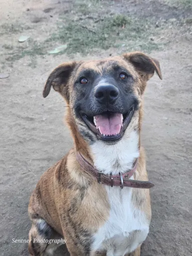

Patient care
Respecting every dog's individual needs and pace of recovery.
Pawsibilities Ranch Dog Rescue is dedicated to compassionate care, rehabilitation, adoption opportunities and lifelong sanctuary for dogs who need it.
Some dogs arrive ready for a new beginning. Others need time, patience and consistent care before they can trust again. We believe their individual needs should guide their journey.
For dogs who cannot safely or comfortably transition to a traditional home, the ranch offers the stability of a forever sanctuary.
Food, medical attention, safe housing, enrichment and behavioral support are ongoing responsibilities — not just temporary needs.
Meet the Dogs →
Respecting every dog's individual needs and pace of recovery.
Offering consistency and comfort to long-term residents.
Working with kindhearted supporters to keep essential care going.